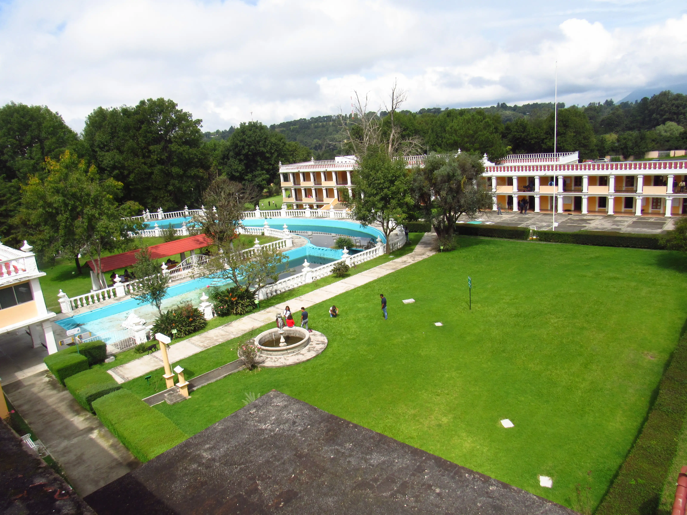

El Instituto Tecnológico de Zitácuaro, que forma parte del Tecnológico Nacional de México
(TecNM), fue gestionado a nivel local en 1990 y abrió oficialmente sus puertas en 1991. Su
sede se encuentra en la Ex-Hacienda de Manzanillos, un lugar histórico donado para el campus.
El edificio principal pertenece a una hacienda de la época porfiriana. Desde abril de
1991, estudiantes, maestros y personal trabajaron para adaptarla a fines educativos. Hoy en
día, aún conserva murales y pinturas de aquel periodo, lo que le da un gran valor artístico
y patrimonial.
El instituto está ubicado en el oriente de Michoacán, en la ciudad de
Zitácuaro, en la Av. Tecnológico 186, colonia Manzanillos. El campus ocupa unas 52 hectáreas,
con áreas verdes, espacios académicos y zonas culturales.
Actualmente ofrece más de 10
programas educativos, entre ingenierías, licenciaturas y posgrados, como:
|  |
El Instituto Tecnológico de Zitácuaro (ITZ) cuenta con diversos reconocimientos que respaldan su calidad académica e institucional:
En 2022, el ITZ alcanzó una matrícula de más de 2,000 estudiantes, destacando principalmente en:
Ese mismo año, egresaron 245 estudiantes, en su mayoría de programas de ingeniería,
administración y tecnologías de la información.
En mayo de 2025, el ITZ firmó un
convenio de colaboración con el Ayuntamiento de Zitácuaro. Este acuerdo fomenta la
participación estudiantil en actividades municipales, programas de servicio social, educación
ambiental, emprendimiento y educación dual.